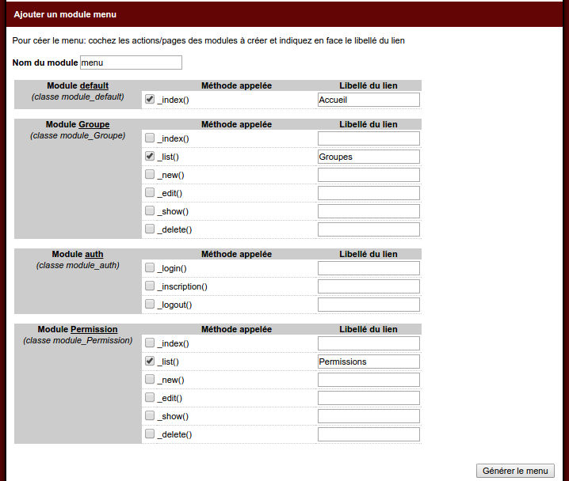

Episode 8: Gestion des droits 2/4
I. Introduction
Ce tutoriel fait partie d'une série de 4 vidéos permettant de mettre en place une gestion de droits.Dans la première partie (support ici ), nous avons créé les tables, généré la couche modèle puis ajouté un module d'authentification avec inscription.
II. Créons un premier utilisateur
Nous avons ici besoin d'utilisateurs: cliquez sur le lien "s'inscrire" et renseignez un premier utilisateur "admin"III. Connectez-vous
Identifiez-vous avec cet utilisateur "admin"IV. Générons des modules CRUDs
L'utilisateur est créé, maintenant nous allons permettre d'administrer les droits.Rendez-vous sur le builder:
Commençons par la classe model_Groupe.php
Générez.
Puis pour la classe model_Permission.php
Pour le champ groupe_id, pensez à modifier le label pour "groupe" et de sélectionner en valeur "Select en utilisant model_Groupe::getSelect()"
Générez
V. Générons un module menu
Pour rappel, le module menu a fait l'objet d'une vidéo ici (support disponible ici )Après avoir généré nos deux modules CRUD Groupe et Permission, nous allons ajouter un menu afin de naviguer entre ces modules.
Cliquez sur "Créer un module menu"

Validez le formulaire.
Le builder vous affiche le code à coller dans la méthode before() de vos modules pour y inclure ce menu.
Editer les fichiers module/default/main.php, module/Permission/main.php et module/default/Groupe/main.php
public function before(){
$this->oLayout=new _layout('template1');
//assignez le menu a l'emplacement menu
$this->oLayout->addModule('menu','menu::index');
}
VI. Le site avec le menu
En cliquant sur "voir le site", vous pouvez voir le menu intégréVII. Renseignez d'abord les groupes
Cliquez sur Groupes dans le menu, et renseigner deux groupes: "admin" et "redacteur"VIII. Renseignez ensuite les permissions
Nos groupes créés, nous allons ajouter des droits pour chacun des profils.L'idée est simple: à chaque fois que vous avez un élement que vous voulez mettre sous droits, vous aller créé la permission.
Cliquez sur le menu "Permission"
Nous allons commencer par ajouter un droit d'édition des utilisateurs:
Ajoutez
Ici, on peut lire que le groupe "admin" à le droit (ALLOW) de modifier (edit) les utilisateurs (users)

Maintenant nous pouvons voir que les rédacteurs peuvent écrire des articles et les admin modifier les utilisateurs
IX. Parenthèse sur la gestion mono-groupe / multi-groupes
Dans notre tutoriel, nous n'utiliserons pas la colonne "allowdeny", car nous avons ici une configuration mono groupe:En effet pour gérer les droits on peut soit avoir une gestion mono groupes comme ici: chaque utilisateur fait partie d'un seul groupe qui lui confère des droits.
On peut également avoir une gestion multi groupes: ici chaque utilisateur ferait parti d'un ou plusieurs groupes.
Dans cette seconde configuration, on pourrait avoir soit une addition de droits : chaque profil ajoutant des droits suppléméntaire, soit avoir une soustraction:
Par exemple: un utilisateur membre du groupe comptabilité a certains droits, et en lui ajoutant le groupe "stagiaire", on lui ajouterait des contraintes supprimant certains d'entre eux.
Dans cette seconde configuration, le champ "allowdeny" a un intétêt.
X. Ajoutons la possibilité d'administrer les utilisateurs
Dans le builder cliquez sur "Créer un module CRUD"Sélectionnez "model_Account.php"
Nous décochons le champs mot de passe, car nous souhaitons ici juste administrer les groupes.
Nous laissons comme actions cochées uniquement "Formulaire de modification"
Générez
En cliquant sur le lien généré:
Notez qu'il manque le menu, nous allons comme précédement ajouter la ligne suivante dans la méthode before() du module CRUD "account" tout juste généré: module/Account/main.php
<?php
class module_Account extends abstract_module{
public function before(){
$this->oLayout=new _layout('template1');
//assignez le menu a l'emplacement menu
$this->oLayout->addModule('menu','menu::index');
}
Nous avons notre menu de retour.
XI. Ajoutons une entrée dans notre menu
Il nous manque ici un lien dans le menu pour accéder à ce nouveau module.Editons le fichier module/menu/main.php
<?php
Class module_menu extends abstract_moduleembedded{
public function _index(){
$tLink=array(
'Accueil' => 'default::index',
'Groupes' => 'Groupe::list',
'Permissions' => 'Permission::list',
);
$oView=new _view('menu::index');
$oView->tLink=$tLink;
return $oView;
}
}
Dont la clé est le libéllé et la valeur le couple module/action.
Ajoutons une ligne dans le tableau pour nos utilisateurs:
$tLink=array(
'Accueil' => 'default::index',
'Groupes' => 'Groupe::list',
'Permissions' => 'Permission::list',
'Utilisateurs' => 'Account::list',
);
XII. Renseignons notre utilisateur admin
Editez l'utilisateur admin, et renseigner dans le menu déroulant "admin", puis valider.XIII. Ajoutons un lien de déconnexion
Il nous manque un lien de déconnexion.Pour information, dans notre module "auth" permettant de gérer l'authentification, nous avons:

Vous pouvez voir ici qu'il y a une méthode _logout(), on a donc une action "logout" permettant de se déconnecter.
Revenos dans le module menu, fichier module/menu/main.php
$tLink=array(
'Accueil' => 'default::index',
'Groupes' => 'Groupe::list',
'Permissions' => 'Permission::list',
'Utilisateurs' => 'Account::list',
'Se déconnecter' => 'auth::logout',
);
<?php
Class module_menu extends abstract_moduleembedded{
public function _index(){
$tLink=array(
'Accueil' => 'default::index',
'Groupes' => 'Groupe::list',
'Permissions' => 'Permission::list',
'Utilisateurs' => 'Account::list',
'Se déconnecter' => 'auth::logout',
);
$oView=new _view('menu::index');
$oView->tLink=$tLink;
return $oView;
}
}
Deconnectez-vous.
XIII. Ajoutons un second utilisateur
Passez par le formulaire d'inscription popur renseigner un second utilisateur "redac"Connectez-vous avec.
Cliquer sur le lien "Utilisateurs" et renseignez pour celui-ci le groupe "redacteur"
Validez
Nous avons bien ici nos deux utilisateurs.
Nous verrons dans le tutoriel suivant comment restreindre les droits en fonction de leur groupe respectif